# 目录
一、物理基础
1.1 红外光谱基本原理
1.2 FTIR 光谱仪构成与基本运行过程
1.3 干涉现象
1.3.1 波的叠加
二、信号与系统
2.1 数字、模拟信号
2.1.1 信号
2.1.2 模拟信号
2.1.3 数字信号
2.2 信号转换
2.2.1 采样与 A/D 转换
2.2.2 奈奎斯特采样定理
2.2.3 混叠
2.3 傅里叶变换（FT）
三、FT 在 FTIR 中的具体原理
3.1 仪器工作流程详解
3.2 信号检测与采样
3.3 数据处理
四、总结与展望
4.1 总结与心得
4.2 未来展望
# 傅里叶变换红外光谱技术原理详解
# 一、物理基础
# 1.1 红外光谱基本原理
当一束红外光射到物质上，可能发生：吸收、透过、反射、散射或者激发荧光。其中，我们需要的部分是吸收的量。然而，对于仪器来说，直接测量吸光度似乎并不现实；因此，我们一般采用已知强度的光源以及透过量来代替吸光度。
红外光，本质上是一段频率特殊、无法被人眼看见的电磁波，其波长一般为 0.75-1000nm，频率约为 300GHz~430THz。与之相似的包括微波（或 Wi-Fi、5G 网络的毫米波）、FM 广播等无线电波和其它。
对于红外光谱分析，我们一般选用其中的一段波长（或频率、波数）为目标光。采用色散元件，我们可以将光源发射的连续光谱（类似包含全部可见光波长而显白色的太阳光）分解为需要的单色光（只包含一种波长的光），然后让其通过样品、测定吸光度。
其余的红外光谱原理可查阅课本，此处不再赘述。
# 1.2 FTIR 光谱仪构成与基本运行过程
FTIR 光谱仪，即 Fourier Transform Infrared Radiation Spectrometer，傅里叶变换红外辐射光谱仪（以下简称 FTIR 或 FFTIR），就是一种用于红外光谱测定的仪器。与普通的红外光谱仪不同，FTIR 不具有单色器，而是以迈克尔逊干涉仪取代，并且对计算机系统尤为依赖、几乎不可能通过人力来计算其光谱图。
FTIR 的运行流程可以概括为：光源发射红外线 – 干涉仪动作产生干涉光 – 干涉光通过样品到达检测器 – 光电二极管或其它检测器将光强转换为电信号 – 传入计算机进行数据处理。其中，光源发射的红外线包括整个需要测定的频率范围，而干涉仪需要持续动作以产生需要的干涉光；干涉光的性质与检测器信号是一一对应且已知的。
# 1.3 干涉现象
1801 年，英国物理学家托马斯・杨在实验室里成功地观察到了光的干涉，以下就是经典的双缝干涉实验。
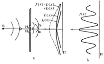
简而言之，同一束光线从不同的位置发出时，在后面的空间内就会发生干涉现象；或者说，当一束光 “碰到” 另一束光时，两束光发生干涉现象。通俗的例子是，当身边有一个持续频率的声音（例如蜂鸣器报警），人站在房间的不同位置就会听到音量大小不同，在某些角落时这个声音甚至会几乎完全消失，这也是干涉现象的一种体现。
# 1.3.1 波的叠加
我们都知道如何画 y=sin x 的函数图像，它是一个正弦曲线。但是，如果在同一个空间和时间内，有另一个波源发射了另一个正弦曲线，并且它的解析式是 y=sin (1.1x)，这时候两个波发生叠加，我们又如何画出 y= (sin x) + sin (1.1x) 的曲线图呢？
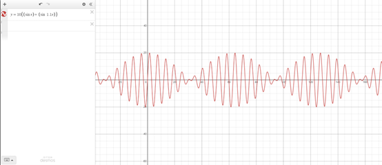
使用现代化的图形计算器，我们可以很轻松地通过计算机画出上述叠加波的函数图像。很明显，叠加波的振幅（也就是一个周期内的最大 y 值）在周期性变化，但我们仍然可以看到 sin x 的痕迹；似乎就是 sin x 的振幅被周期性地 “压缩”，而这个压缩的方式仍然是一个正弦样子。
也许这些内容已经难以理解了，但我们只需要知道，多个波在叠加之后会产生新的波，而这个叠加波的形态与每个单独的波似乎没有太过直接的关联。
# 二、信号与系统
# 2.1 数字、模拟信号
# 2.1.1 信号
所谓信号，指的是能传递信息的某种载体。例如现在屏幕上显示的文字，就是一种传递文字信息的信号。这是一个抽象的概念，但有太多实际的例子。接下来的篇幅里，我们将大量使用声音，一种最常见的信号为例，讲解信号与系统的浅层内容。
# 2.1.2 模拟信号
所谓模拟信号，指的其实是连续的信号；例如我们听到的声音，实际上是声源产生的机械振动，导致空气被压缩和扩张，这个不断变化的气压传入耳朵，再通过复杂的器官系统，我们就能听到声音。这个过程中，物体的机械振动是连续的，它并不会突变。如果难以理解，那么可以想象一下，如果一个物体的振动发生了一次突变，这意味着它振动面上的分子发生了瞬间移动，也就是在 0 秒内产生了大于 0 的位移，其速度超过了光速；显然，这对于声波来说是不可能的。因此，我们听到的声音就是连续的信号。
# 2.1.3 数字信号
数字信号，也可以叫离散信号，是信号的一种类型。这个名词听上去很高级，但实际上它跟模拟信号没有太大的区别。它们都是信号，只不过形式不同。
我们知道，模拟信号是连续的信号。仍然以声波为例，如果我们将声音与时间的关系画在一张图上，这就是所谓的声波图。
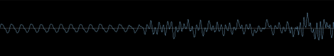
现在，假设我们希望保存下来这一段声波，并希望它能在一定条件下重现出来。但是，模拟信号是连续的，这意味着它在时间上不存在断点，它包含的数值为无穷多个。显然，计算机无法记录无穷多个数据，实际上我们也没有必要全部记录下来。我们只需要每隔一段时间记录一个数据，这样就可以将无限的数据变成有限，并且似乎也有很大的希望能够重现出来（至少在能接受的损失范围内）。这个过程与逻辑将在下文介绍。
# 2.2 信号转换
# 2.2.1 采样与 A/D 转换
刚才我们提到了模拟信号转换到数字信号的过程。实际上，这就是 ADC（Analog to Digital Converter，模拟到数字转换）的工作原理。我们只需要在尽可能短的时间间隔内记录数据，这样至少主观上我们就可以重现它。
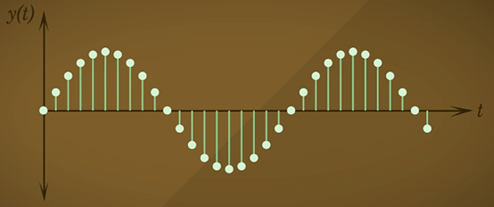
这张图展示的就是一个正弦波经过转换后的结果，每个圆圈代表一个数据点；这样，无限的信号变成了有限的数据点，我们也能通过点的走向看出来它是一个正弦波。这个过程，我们称之为 “采样”（Sampling）。采样的结果，就是将连续信号转换为有限个的采样点（Sample）。
反之，我们也可以通过 DAC 过程，将采样后的离散信号再次转换回模拟信号；这样，你存储在手机里的音乐就能再次变成连续的电信号，并通过扬声器的振膜再变成机械振动。由于这个过程涉及过多的电子工程学内容，并且对于本文所论述的信号处理而言没有太大价值，因此不在此处展开。
# 2.2.2 奈奎斯特采样定理
现在，我们知道了采样的过程，就是用大量的数据点来描述原信号。但是，这个大量到底是多少？我们说 “尽可能短的时间间隔内”，这个间隔到底是多少？
在回答以上问题之前，我们先想象一下刚才的采样图：里面有很多的数据点，因此我们可以 “脑补” 出原来的信号。但是如果数据点太少，我们还能这样 “脑补” 吗？显然，可能就会有损失，甚至会丢失。
庆幸的是，我们有一个定理，它给出了这个最小数据点数的限制，它就叫奈奎斯特采样定理。
奈奎斯特定理的原文是：任何有限带宽的连续信号都可以被完美转换为数字信号，只要采样频率高于原信号中最高频率分量的 2 倍。
太长了看不懂，没关系，我们分别来解释一下它的含义。
首先，我们要知道采样率的定义。刚才说到的 “最小时间间隔”，其实就是指采样点的间隔；而它的倒数就是采样率。采样率的含义是，每秒的采样点数量，单位是 Hz（赫兹）。
然后，我们有一个信号频率的概念；我们知道，人耳能听到的声音频率范围是 20-20kHz，这里的频率指的是声源机械振动的频率。
现在，我们希望录音机能够回放的声音频率覆盖人耳的听觉频率范围，这样它录制的声音才跟最开始的声音能尽可能地一致。现在就轮到奈奎斯特定理上场了，我们的录音机采样率需要＞20kHz x 2 = 40kHz，才能保证它可以记录到人耳的听觉上限。
没错，奈奎斯特定理就是这么简单的应用。如果我们想将一个最高频率为 100Hz 的信号无损转换为数字信号，我们的采样率就要大于 200Hz，仅此而已。实际上，多数现代音频以 44.1kHz 或 48kHz 的采样频率进行采样，以保证完全覆盖人耳听觉频率范围。
这就结束了吗？奈奎斯特定理真的能如此简单和完美地指导我们开发电子设备吗？显然不是的。它只是一种理想情况下的描述，实际上我们的仪器采样率都是有限的，存储设备的空间也是有限的，这就意味着很多时候我们的采样率并不能达到要求的 2 倍于最高频率（我们称之为奈奎斯特频率，以下简称 Nf），而这时候，我们就遇到了采样过程的最大问题 —— 混叠。
这里还有一个小插曲，你可能会说，采样之后的数字信号是离散的数据点，它怎么能够无损转换回模拟信号呢？我难道不可以在数据点之间随便画我想要的图形吗？
很抱歉，你确实不可以。这就是奈奎斯特采样定理的美丽之处了，它从数学上证明了，我们还原回去的那个信号，就是这一段数字信号转换到模拟信号时的唯一解。如果你试图在其中画更多的内容，那么它就会产生高于奈奎斯特频率的内容，那么在还原时由于频率的限制，这些内容就会丢失，最后仍然会变成原来的波形。
# 2.2.3 混叠
什么是混叠（Aliasing）？
我们从一个生活中常见的例子来说明 —— 车轮效应。
如果你在电视上看节目，或者自己拍摄视频，然后画面里包含了汽车、自行车的车轮运动，你可能会注意到一个奇怪的现象：当车从停止开始加速时，你看到画面里的车轮逐渐加快；但当加速到一定水平后，不仅车轮没有更快，反而逐渐开始减速，直到某个时候车轮在画面里看起来跟静止一样；如果车继续加速，你甚至会看到车轮开始反方向旋转。
没错，这就是混叠；确切来说，是图像信息在时间域上的混叠。
发生车轮效应的原因是，摄像机的拍摄并不是记录连续的运动画面，而是相当于一个快速连拍的过程，它每秒拍摄一定数量（一般是 24 或 30）的照片，然后在你观看视频的时候以相同的速度快速播放照片；由于人眼的视觉暂留，我们就看到的连续的运动画面。
但是，你可能已经注意到了，这里摄像机并没有记录原始的连续画面，它的工作更像是一个 “采样” 的过程。是的，这确实是一种采样，并且我们看到了采样过程中最大的问题：混叠。它发生在采样速率小于 Nf 的时候，并且会导致一些严重的后果（例如车轮反转）。
理解起来也很容易。假设我们的手机每秒拍 30 张照片（在视频里称为 “帧”），这意味着相邻两帧的间隔是 1/30s=33.3ms。如果车轮的运动速度够快，那么就可能发生一个情况：在这 33.3ms 的时间间隔之内，车轮刚好转过了一圈（或 1/n 圈，取决于车轮形状），这意味着第二帧和第一帧的画面是完全一样的。以此类推，如果车速维持在这个水平，那么我们将看到车轮一直静止。
在信号领域，混叠的含义几乎是一样的，当我们的信号包含了大于采样率的频率，此时就会发生混叠现象，这会向已经采样的数据添加伪影，并且一旦它进入了数字信号，就无法消除。
* 更多信息和通俗的动画解释：点击查看 b 站视频
# 2.3 傅里叶变换（FT）
* 本节部分内容源自原文地址，作者：韩昊
现在，我们已经获得了一些采样好的数字信号，假设这些信号非常完美，不会发生混叠。我们随时可以用 DAC 过程将其转换回模拟信号，也可以存储在硬盘里以便之后使用。那么，我们还要傅里叶变换干什么？傅里叶变换到底是个什么东西？
我们用一个最直观的方式理解傅里叶变换。
在你的理解中，一段音乐是什么呢？
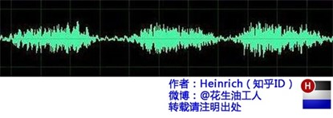
这是我们对音乐最普遍的理解，一个随时间变化的振动。
但是，对于精通乐器的人来说，音乐更直观的理解也许是这样的：
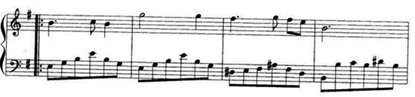
好了，傅里叶变换到此结束，我们继续下一章的学习。
什么？这还不够吗？
其实这是一个不太恰当的例子，但它通俗地解释了 FT（傅里叶变换）的过程：将一段随时间变化的声波（时域信息）转换为随时间变化的音调（频域信息）。FT 过程在无限的时间上识别信号，然后把其中的频率信息提取出来，并转换成有限的频率谱图。
不过，我们到底怎么实现 FT 呢，一段声波信号看起来那么复杂、毫无规律，我们怎么提取其中的频率信息？
傅里叶变换认为，所有的叠加波，都可以由有限或无限个已知或已知规律的正弦波叠加而成。而处理正弦波是非常轻松的，只需要找到它的周期，就能知道它的频率，还能得知它的表达式，甚至将其替换为另一个不同频率的正弦波。
如果还不够直观，我们看一下两段音乐的声波图：
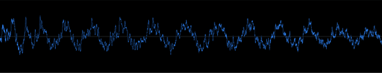
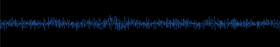
上图是电子音乐，包含强烈鼓点、贝斯（低频）声音，而下图则是钢琴曲，这些低频声音很少。
也许你已经看出来其中的区别了，低频声音占比高的声波，它的图像会呈现一个十分 “低频” 的起伏；而在同样的窗口内，低频占比小的声波则显得 “复杂” 很多，并且缺乏更大的起伏波浪。仔细观察上图，其实在起伏的过程中也包含很多小的尖刺，实际上这就是低频声音与高频声音叠加之后的结果。
现在，你已经掌握了用肉眼做傅里叶变换的能力（），但是这个计算精度很差，也只能区分少数的几个频率（这就是为什么人来算傅里叶变换几乎不可能的原因）。不过，计算机很擅长这个，让它来做 FT（确切来说是 FFT，快速傅里叶变换，是针对计算机的一种优化算法），我们就能得到音乐的频谱图（颜色越亮表示声音强度越高）：
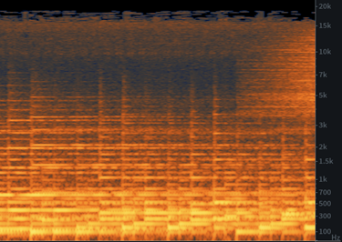
（准确地说，这张图是频谱随时间变化的图，因为音乐信号中的频率信息时刻变化）
这个图对于音频工程师来说简直就是一个神器；把声波转换为频率信息，我们可以发现很多原来不能发现的错误和问题；如果一些乐器声音太大导致刺耳的话，频谱图上就能看到高频部分的强度很高。
在其它需要分析信号的领域，FT 同样是好用的工具。它把复杂的信号做了简化，让我们能从另一个维度（视角）来观察信号。
* 如果还感有余力，则可以详细了解拉普拉斯变换，它又从另一个维度理解了信号。
# 三、FT 在 FTIR 中的具体原理
# 3.1 仪器工作流程详解
对于 FTIR 而言，我们有红外光源、干涉仪（包含两个反射镜，一个是动镜，一个是定镜），He-Ne 激光器，样品池，检测器，计算机系统。红外光源会持续发射连续的红外光谱，而动镜则利用激光校准、通过电机来调整位置，使之能够在确定的距离上进行移动；入射红外光在透镜作用下分成两束光，并在经过动镜和定镜后再次合为一束，在这个过程中两束光交汇即产生干涉现象，而其相位差就由动镜位置决定。动镜不断移动，干涉相位也在不断变化，这一束干涉光送入样品池后被吸收一部分，最后进入检测器和信号系统中。
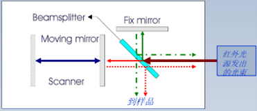
这张图很好地解释了 FTIR 中各光线的走向。其中，Beamsplitter 是光波分束器，也叫半透半反射镜，它的作用是将红外光源发射的光线分为两束，一束为绿色实线，另一束为红色实线；它们分别到达定镜和动镜，并被反射回来（反射光用绿色、红色虚线表示）。反射光到达分束器时也会发生同样的现象，我们需要的光线是绿色穿透线和红色反射线（虚线），它们在分束器处就会发生干涉现象，最后干涉光到达样品。
# 3.2 信号检测与采样
通过前文信号与系统部分的学习，我们知道，仪器是不能处理连续信号的，必须通过采样、转换为数字信号才可以进行处理和储存。不过，与音频（和大多数）信号不同的是，FTIR 中信号并不是随时间变化，而是随动镜位置变化的。当动镜固定在一个位置时，得到的信号永远是同一个值。这就给了我们的仪器一些 “可乘之机”。
如果了解过示波器或相关产品，那么你一定会知道，现在的实验室示波器带宽一般不会超过 10GHz（最大带宽，指在这个频率以内的信号都能被较为准确地还原和记录），而红外光的频率在 300GHz 到 430THz 之间，它们之间的差距非常大；尽管这个对比并不恰当，但我们依然能发现，通过时间来采样显然是不合适的。
理解了这些，我们就能知道 FTIR 到底是如何采集数据的了；动镜每次移动很短的距离，然后两束光的相位会发生变化（光程差改变），进而引起干涉发生在不同的光频率上。这个动镜单次移动的距离非常短，以至于要单独用 He-Ne 激光来进行位置调整。具体是如何做到的，我并没有找到对应的资料，如果有同学知道可以在评论区告知。
# 3.3 数据处理
现在，动镜完整地移动了一个循环，其中每次停顿的时候检测器都记录了一个数值，这个数值代表动镜在这个位置的时候这种干涉光导致的透过程度。将这些数值与动镜位置的关系作图，即得干涉图。对干涉图作 FFT 运算，即得每个频率（波数）下的吸光度（透过率）。
如果难以理解，这里有一个解释的过程。
假设我们的红外光源只会发射两个频率的波（即两个单色光），它们的频率有一定的差异。现在，这两束光经过了一次完整的工作循环，则在干涉仪中，两束光会发生干涉现象，且这个干涉会随动镜位置的改变而变化。我们将动镜的位置类比到音频信号中的时间，将检测器的结果理解为量化后的强度值，则得到的干涉图实际上是一种强度 - 时间的时域图；FFT 可以将其转变为光谱图，实际上是一种强度 - 频率（波数）的频域图。只不过在音频信号中，频率指的是振动次数 / 秒，而光谱中频率指的是波数 / 厘米。
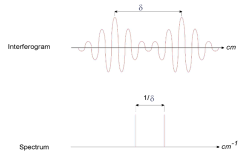
左图为干涉图，右图为光谱图。可以将干涉图类比为时域信号图（如声波图），将光谱图类比为频域信号图（频谱图）。
# 四、总结与展望
# 4.1 总结与心得
FTIR 是目前应用最多的红外光谱分析原理，因为它与标准的红外光谱分析法相比，具有检测速度快、灵敏度更高、信噪比更高等优势。但目前大学相关仪器分析教材中并未详细描述 FTIR 的原理，甚至网络上都很难直接搜索到 FTIR 的详细原理（大部分都是以某乎的回答形式，而那些回答要么直接抄教材、FFT 部分一笔带过，要么过于复杂、直接摆上一长串的变换公式，这对于想稍微深入理解但又没有学习过信号与系统的化学相关专业学生来说实在不友好）。因此，我在查找了大量的资料的情况下才有了撰写这篇文章的想法。
我并不是多学位、辅修第二专业的学生，但我对音频处理、电子工程都有所了解和学习。这一次在食品专业课程中看到了相关的技术，我几乎是瞬间就产生了浓厚的兴趣。尽管学习的过程十分艰难，这篇文章最终还是诞生了，以期有相同兴趣的同学可以得到帮助。
# 4.2 未来展望
由于大三时期学习事务繁多，本文从 2022 年 11 月 22 日开始编写，到 26 日了才勉强算接近尾声。因此，文章内仍然有很多错误没能及时发现与更正，若能指正，感激不尽。
实际上我还学习了更多的内容，例如旁瓣峰与窗函数、信号补零的影响等等，但最终都并未写入本文。若有兴趣了解，可联系我提供相关学习资料地址等。